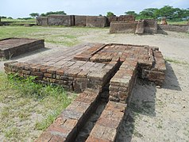

Gujarat was one of the main central areas of the Indus Valley Civilisation. It contains ancient metropolitan cities from the Indus Valley such as Lothal, Dholavira and Gola Dhoro. The ancient city of Lothal was where India's first port was established. The ancient city of Dholavira is one of the largest and most prominent archaeological sites in India, belonging to the Indus Valley Civilisation. The most recent discovery was Gola Dhoro. Altogether, about 50 Indus Valley settlement ruins have been discovered in Gujarat.
The ancient history of Gujarat was enriched by the commercial activities of its inhabitants. There is clear historical evidence of trade and commerce ties with Egypt, Bahrain and Sumer in the Persian Gulf during the time period of 1000 to 750 BCE. There was a succession of Hindu and Buddhist states such as the Mauryan Dynasty, Western Satraps, Satavahana dynasty, Gupta Empire, Chalukya dynasty, Rashtrakuta Empire, Pala Empire and Gurjara-Pratihara Empire, as well as local dynasties such as the Maitrakas and then the Chaulukyas.
In the early 8th century, the Arabs of the Umayyad Caliphate established an empire in the name of the rising religion of Islam, which stretched from Spain in the west to Afghanistan and modern-day Pakistan in the east. Al-Junaid, the successor of Qasim, finally subdued the Hindu resistance within Sindh and established a secure base. The Arab rulers tried to expand their empire southeast, which culminated in the Caliphate campaigns in India fought in 730; they were defeated and expelled west of the Indus river, probably by a coalition of the Hindu rulers Nagabhata I of the Pratihara Dynasty, Vikramaditya II of the Chalukya dynasty and Bappa Rawal of Guhila dynasty. After this victory, the Arab invaders were driven out of Gujarat. General Pulakeshin, a Chalukya prince of Lata, received the title Avanijanashraya (refuge of the people of the earth) and honorific of "Repeller of the unrepellable" by the Chalukya emperor Vikramaditya II for his victory at the battle at Navsari, where the Arab troops suffered a crushing defeat.